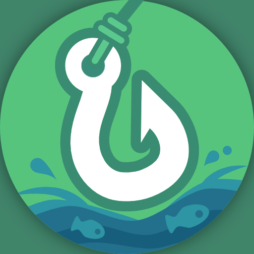
[FS] 鳍妙至极 Tide
共 394 个条目 · tide
版本: 2.1.1 · 来源: tide-neoforge-1.21.1-2.1.1.jar
Expands the fishing system and adds 100+ new fish.
MC百科中文名: [FS] 鳍妙至极
MC百科页面: https://www.mcmod.cn/class/27290.html（[FS] 鳍妙至极 (Fintastic Supreme)）
官方介绍 （Modrinth · 中文版由 GLM AI 翻译，仅供参考）
Tide 是一个拓展钓鱼体验的 Minecraft 模组，添加了许多新鱼类、新机制和新奖励。
如果你有问题、反馈，或想看看最近有什么动态，欢迎加入 Discord 服务器！
机制说明
上手很简单：先合成一根钓鱼竿。可以是原版的基础钓鱼竿，也可以是 Tide 新增的钓鱼竿之一。有些可以通过锻造台加线来合成，另一些则只能在世界中寻找。
按住右键蓄力后松开即可抛竿，然后耐心等待鱼儿上钩。鱼不咬钩？试着做点鱼饵（bait）来提高钓鱼速度或获得特殊加成。不同钓鱼竿的鱼饵槽位数量各不相同，放入多种不同类型的鱼饵还能叠加它们的效果。
Tide 还为每条钓上来的鱼准备了一个简单的小游戏。当进度条位于彩色区域内时点击右键，就能把鱼拉上来——但小心别让它跑掉！每种鱼都有独特的移动方式和力道，保持专注吧。
有的鱼轻松上钩，有的鱼可没那么好对付……
钓鱼竿自定义
你可以用一个新方块——钓鱼台（Angling Table）——给任意钓鱼竿加装鱼钩、鱼线和装饰浮漂。
各式各样的配件拥有独特的效果。这些加成包括：更容易钓上鱼、额外的运气，甚至在岩浆和虚空中钓鱼！
（当然，浮漂的作用也包括让你的钓鱼竿看起来更酷）
在钓鱼台上，鱼钩、鱼线和浮漂可以任意组合
钓鱼图鉴
通过钓鱼图鉴（fishing journal）记录你钓到的所有鱼——这是一本特殊的书，每当你钓到一条鱼，它就会自动更新。你可以用它来追踪收集进度、最大捕获记录、鱼类栖息地等等。
你能把它们全部钓上来吗？
想知道某种鱼在哪里能钓到？你可以在板条箱中找到鱼类笔记（fishy notes），它们暗示着各种鱼的出没地点。
高度可定制
模组的许多方面都可以按你的喜好调整。
需要微调什么？ 你或许能在配置界面中找到所需选项。
想添加一条鱼或修改现有的鱼？ Tide 拥有一套灵活的鱼类数据（fish data）系统，让模组或数据包开发者可以通过 JSON 文件把自己的鱼加入世界。
除了鱼之外，你还可以用数据包向钓鱼战利品中插入自定义的战利品表或板条箱。需要定制方面的帮助？欢迎到 Discord 服务器提问。
兼容性
Tide 与众多优秀的模组兼容： - Hybrid Aquatic - Nether Depths Upgrade - Stardew Fishing - Fishing Real - Fish of Thieves - Serene Seasons - Fabric Seasons - Ecliptic Seasons
想要兼容更多模组，请查看这个数据包！
由 GLM AI 翻译，仅供参考
查看英文原文（Modrinth）
Tide is a Minecraft mod that expands the fishing experience, adding many new fish, mechanics, and rewards.
Join the discord server if you have a question, feedback, or want to see what's happening!
The Mechanics
To get started, craft a fishing rod. This can be either the regular fishing rod from the base game, or one of the new fishing rods added by Tide. Some are craftable via a smithing table and string, while others can only be found throughout the world.
Cast your line by holding right-click and releasing, then wait patiently for a fish to arrive. Fish not biting? Try crafting some bait to increase your fishing speed or provide special bonuses. Fishing rods will have different amount of bait slots, and by applying multiple different types of bait, you can stack their effects together.
Tide also adds a simple fishing minigame for each fish you catch. Right click when the bar is inside the colored region to reel in the fish, but be careful not to lose it! Each fish has its own unique movement behavior and strength, so stay alert.
Some fish are easy to catch, while others aren't...
Fishing Rod Customization
You can add hooks, lines, and cosmetic bobbers to any fishing rod using a new block, the Angling Table.
A variety of accessories can be created with unique effects. Some of the bonuses include easier catches, extra luck, or even lava and void fishing!
(or making your fishing rod look cool, in the case of the bobbers)
You can create any combination of hooks, lines, and bobbers at the Angling Table
The Journal
Keep track of all the fish you’ve caught via the fishing journal, a special book that gets updated every time you catch a fish. You can use it to track your completion progress, biggest catches, fish habitats, and much more.
Can you catch them all?
Want to know where you can catch a fish? You can find fishy notes in crates that hint at the locations of individual fish.
Customizability
Many aspects of the mod can be changed to your liking.
Need to tweak something? You might be able to find what you need in the config screen.
Looking to add a fish or modify existing ones? Tide has a versatile fish data system, allowing mod or datapack developers to add their own fish to find in the world via JSON files.
In addition to fish, you can also use datapacks to insert custom loot tables or crates to the fishing loot. Need help customizing something? Feel free to ask in the discord server.
Compatibility
Tide is compatible with many amazing mods: - Hybrid Aquatic - Nether Depths Upgrade - Stardew Fishing - Fishing Real - Fish of Thieves - Serene Seasons - Fabric Seasons - Ecliptic Seasons
For more mod compatibility, check out this datapack!
资料来源：Tide 2
物品与方块
 深层鮟鱇鱼
深层鮟鱇鱼tide:abyss_angler · 物品深层鮟鱇鱼桶
tide:abyss_angler_bucket · 物品
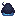
深层鮟鱇鱼刷怪蛋tide:abyss_angler_spawn_egg · 物品深渊鱼饵
tide:abyss_bait · 物品
 始祖鱼
始祖鱼tide:alpha_fish · 物品
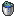
始祖鱼桶tide:alpha_fish_bucket · 物品
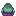
始祖鱼刷怪蛋tide:alpha_fish_spawn_egg · 物品
 琥珀岩鱼
琥珀岩鱼tide:amber_rockfish · 物品
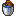
琥珀岩鱼桶tide:amber_rockfish_bucket · 物品
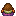
琥珀岩鱼刷怪蛋tide:amber_rockfish_spawn_egg · 物品
 紫水晶浮漂
紫水晶浮漂tide:amethyst_bobber · 物品
 鳀鱼
鳀鱼tide:anchovy · 物品
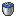
鳀鱼桶tide:anchovy_bucket · 物品
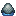
鳀鱼刷怪蛋tide:anchovy_spawn_egg · 物品
 神仙鱼
神仙鱼tide:angelfish · 物品神仙鱼桶
tide:angelfish_bucket · 物品
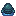
神仙鱼刷怪蛋tide:angelfish_spawn_egg · 物品
 鮟鱇鱼
鮟鱇鱼tide:anglerfish · 物品鮟鱇鱼桶
tide:anglerfish_bucket · 物品
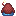
鮟鱇鱼刷怪蛋tide:anglerfish_spawn_egg · 物品
 渔夫工坊
渔夫工坊tide:angling_table · 方块
 苹果浮漂
苹果浮漂tide:apple_bobber · 物品
 流水荆棘
流水荆棘tide:aquathorn · 物品
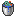
流水荆棘桶tide:aquathorn_bucket · 物品流水荆棘刷怪蛋
tide:aquathorn_spawn_egg · 物品
 巨骨舌鱼
巨骨舌鱼tide:arapaima · 物品
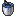
巨骨舌鱼桶tide:arapaima_bucket · 物品巨骨舌鱼刷怪蛋
tide:arapaima_spawn_egg · 物品
 尘鲈
尘鲈tide:ash_perch · 物品尘鲈桶
tide:ash_perch_bucket · 物品尘鲈刷怪蛋
tide:ash_perch_spawn_egg · 物品
 鱼饵
鱼饵tide:bait · 物品
 基岩虫
基岩虫tide:bedrock_bug · 物品基岩虫桶
tide:bedrock_bug_bucket · 物品
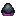
基岩虫刷怪蛋tide:bedrock_bug_spawn_egg · 物品
 基岩脂鲤
基岩脂鲤tide:bedrock_tetra · 物品基岩脂鲤桶
tide:bedrock_tetra_bucket · 物品基岩脂鲤刷怪蛋
tide:bedrock_tetra_spawn_egg · 物品
 黑色浮漂
黑色浮漂tide:black_bobber · 物品
 黑莓鲈
黑莓鲈tide:black_crappie · 物品
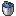
黑莓鲈桶tide:black_crappie_bucket · 物品
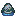
黑莓鲈刷怪蛋tide:black_crappie_spawn_egg · 物品烈焰钓竿
tide:blazing_fishing_rod · 物品
 烈焰剑鱼
烈焰剑鱼tide:blazing_swordfish · 物品烈焰剑鱼桶
tide:blazing_swordfish_bucket · 物品烈焰剑鱼刷怪蛋
tide:blazing_swordfish_spawn_egg · 物品
 花鲈
花鲈tide:blossom_bass · 物品
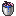
花鲈桶tide:blossom_bass_bucket · 物品花鲈刷怪蛋
tide:blossom_bass_spawn_egg · 物品
 蓝色浮漂
蓝色浮漂tide:blue_bobber · 物品
 蓝色霓虹鱼
蓝色霓虹鱼tide:blue_neonfish · 物品蓝色霓虹鱼桶
tide:blue_neonfish_bucket · 物品蓝色霓虹鱼刷怪蛋
tide:blue_neonfish_spawn_egg · 物品
 蓝鳃太阳鱼
蓝鳃太阳鱼tide:bluegill · 物品蓝鳃太阳鱼桶
tide:bluegill_bucket · 物品蓝鳃太阳鱼刷怪蛋
tide:bluegill_spawn_egg · 物品
 溪鳟
溪鳟tide:brook_trout · 物品
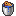
溪鳟桶tide:brook_trout_bucket · 物品溪鳟刷怪蛋
tide:brook_trout_spawn_egg · 物品
 棕色浮漂
棕色浮漂tide:brown_bobber · 物品
 公牛鲨
公牛鲨tide:bull_shark · 物品
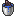
公牛鲨桶tide:bull_shark_bucket · 物品公牛鲨刷怪蛋
tide:bull_shark_spawn_egg · 物品
 鲤鱼
鲤鱼tide:carp · 物品
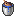
鲤鱼桶tide:carp_bucket · 物品鲤鱼刷怪蛋
tide:carp_spawn_egg · 物品
 鲶鱼
鲶鱼tide:catfish · 物品鲶鱼桶
tide:catfish_bucket · 物品
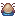
鲶鱼刷怪蛋tide:catfish_spawn_egg · 物品
 穴爬鱼
穴爬鱼tide:cave_crawler · 物品
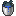
穴爬鱼桶tide:cave_crawler_bucket · 物品
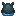
穴爬鱼刷怪蛋tide:cave_crawler_spawn_egg · 物品
 穴鳗
穴鳗tide:cave_eel · 物品穴鳗桶
tide:cave_eel_bucket · 物品
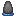
穴鳗刷怪蛋tide:cave_eel_spawn_egg · 物品
 裂隙鳗
裂隙鳗tide:chasm_eel · 物品裂隙鳗桶
tide:chasm_eel_bucket · 物品裂隙鳗刷怪蛋
tide:chasm_eel_spawn_egg · 物品
 紫颂浮漂
紫颂浮漂tide:chorus_bobber · 物品
 紫颂鳕鱼
紫颂鳕鱼tide:chorus_cod · 物品
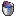
紫颂鳕鱼桶tide:chorus_cod_bucket · 物品紫颂鳕鱼刷怪蛋
tide:chorus_cod_spawn_egg · 物品
 气候测量仪
气候测量仪tide:climate_gauge · 物品
 腔棘鱼
腔棘鱼tide:coelacanth · 物品
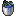
腔棘鱼桶tide:coelacanth_bucket · 物品
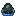
腔棘鱼刷怪蛋tide:coelacanth_spawn_egg · 物品
 熟鱼
熟鱼tide:cooked_fish · 物品
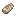
熟鱼片tide:cooked_fish_slice · 物品铜鱼线
tide:copper_line · 物品
 绯红尖颚
绯红尖颚tide:crimson_fangjaw · 物品绯红尖颚桶
tide:crimson_fangjaw_bucket · 物品绯红尖颚刷怪蛋
tide:crimson_fangjaw_spawn_egg · 物品
 紫水晶钓竿
紫水晶钓竿tide:crystal_fishing_rod · 物品
 晶虾
晶虾tide:crystal_shrimp · 物品
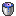
晶虾桶tide:crystal_shrimp_bucket · 物品晶虾刷怪蛋
tide:crystal_shrimp_spawn_egg · 物品
 晶鲤
晶鲤tide:crystalline_carp · 物品晶鲤桶
tide:crystalline_carp_bucket · 物品晶鲤刷怪蛋
tide:crystalline_carp_spawn_egg · 物品
 青色浮漂
青色浮漂tide:cyan_bobber · 物品
 黑暗吞食者
黑暗吞食者tide:darkness_eater · 物品黑暗吞食者桶
tide:darkness_eater_bucket · 物品
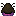
黑暗吞食者刷怪蛋tide:darkness_eater_spawn_egg · 物品
 深邃之蓝
深邃之蓝tide:deep_blue · 物品
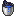
深邃之蓝桶tide:deep_blue_bucket · 物品
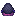
深邃之蓝刷怪蛋tide:deep_blue_spawn_egg · 物品
 深层石斑鱼
深层石斑鱼tide:deep_grouper · 物品
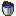
深层石斑鱼桶tide:deep_grouper_bucket · 物品
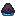
深层石斑鱼刷怪蛋tide:deep_grouper_spawn_egg · 物品
 深度测量仪
深度测量仪tide:depth_meter · 物品
 魔鳉
魔鳉tide:devils_hole_pupfish · 物品
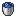
魔鳉桶tide:devils_hole_pupfish_bucket · 物品
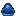
魔鳉刷怪蛋tide:devils_hole_pupfish_spawn_egg · 物品
 钻石浮漂
钻石浮漂tide:diamond_bobber · 物品
 钻石钓竿
钻石钓竿tide:diamond_fishing_rod · 物品钻石鱼线
tide:diamond_line · 物品
 龙鱼
龙鱼tide:dragon_fish · 物品龙鱼桶
tide:dragon_fish_bucket · 物品龙鱼刷怪蛋
tide:dragon_fish_spawn_egg · 物品龙鳍靴
tide:dragonfin_boots · 物品
 滴水石镖鲈
滴水石镖鲈tide:dripstone_darter · 物品
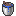
滴水石镖鲈桶tide:dripstone_darter_bucket · 物品
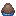
滴水石镖鲈刷怪蛋tide:dripstone_darter_spawn_egg · 物品
 鸭子浮漂
鸭子浮漂tide:duck_bobber · 物品
 飞翔荷兰人的袜子
飞翔荷兰人的袜子tide:dutchman_sock · 物品飞翔荷兰人的袜子桶
tide:dutchman_sock_bucket · 物品
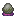
飞翔荷兰人的袜子刷怪蛋tide:dutchman_sock_spawn_egg · 物品
 回响浮漂
回响浮漂tide:echo_bobber · 物品
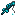
共鸣之竿tide:echo_fishing_rod · 物品
 回响鲷鱼
回响鲷鱼tide:echo_snapper · 物品回响鲷鱼桶
tide:echo_snapper_bucket · 物品回响鲷鱼刷怪蛋
tide:echo_snapper_spawn_egg · 物品
 鞘翅鳟
鞘翅鳟tide:elytrout · 物品
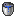
鞘翅鳟桶tide:elytrout_bucket · 物品
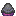
鞘翅鳟刷怪蛋tide:elytrout_spawn_egg · 物品
 微光鲤
微光鲤tide:ember_koi · 物品
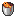
微光鲤桶tide:ember_koi_bucket · 物品微光鲤刷怪蛋
tide:ember_koi_spawn_egg · 物品
 附魔金苹果浮漂
附魔金苹果浮漂tide:enchanted_golden_apple_bobber · 物品附魔怀表
tide:enchanted_pocket_watch · 物品
 末影滑翔者
末影滑翔者tide:ender_glider · 物品
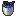
末影滑翔者桶tide:ender_glider_bucket · 物品
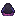
末影滑翔者刷怪蛋tide:ender_glider_spawn_egg · 物品
 末影鳍鱼
末影鳍鱼tide:enderfin · 物品
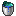
末影鳍鱼桶tide:enderfin_bucket · 物品
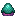
末影鳍鱼刷怪蛋tide:enderfin_spawn_egg · 物品
 末影凝视者
末影凝视者tide:endergazer · 物品末影凝视者桶
tide:endergazer_bucket · 物品末影凝视者刷怪蛋
tide:endergazer_spawn_egg · 物品
 羽毛浮漂
羽毛浮漂tide:feather_bobber · 物品
 炽热钓钩
炽热钓钩tide:fiery_hook · 物品鱼骨
tide:fish_bone · 物品
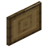
鱼类展示框tide:fish_display · 方块
 探鱼器
探鱼器tide:fish_finder · 物品
 钓鱼背包
钓鱼背包tide:fish_satchel · 物品生鱼片
tide:fish_slice · 物品
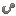
钓钩tide:fishing_hook · 物品百鱼全书
tide:fishing_journal · 物品鱼线
tide:fishing_line · 物品鱼类便笺
tide:fishy_note · 物品
 比目鱼
比目鱼tide:flounder · 物品
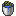
比目鱼桶tide:flounder_bucket · 物品
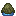
比目鱼刷怪蛋tide:flounder_spawn_egg · 物品
 霜冻比目鱼
霜冻比目鱼tide:frostbite_flounder · 物品霜冻比目鱼桶
tide:frostbite_flounder_bucket · 物品霜冻比目鱼刷怪蛋
tide:frostbite_flounder_spawn_egg · 物品
 金鲦鱼
金鲦鱼tide:gilded_minnow · 物品金鲦鱼桶
tide:gilded_minnow_bucket · 物品金鲦鱼刷怪蛋
tide:gilded_minnow_spawn_egg · 物品
 荧光鱼
荧光鱼tide:glowfish · 物品荧光鱼桶
tide:glowfish_bucket · 物品荧光鱼刷怪蛋
tide:glowfish_spawn_egg · 物品
金苹果浮漂tide:golden_apple_bobber · 物品
 金浮漂
金浮漂tide:golden_bobber · 物品金钓竿
tide:golden_fishing_rod · 物品金鱼线
tide:golden_line · 物品
 草浮漂
草浮漂tide:grassy_bobber · 物品
 灰色浮漂
灰色浮漂tide:gray_bobber · 物品
 大白鲨
大白鲨tide:great_white_shark · 物品大白鲨桶
tide:great_white_shark_bucket · 物品大白鲨刷怪蛋
tide:great_white_shark_spawn_egg · 物品
 绿色浮漂
绿色浮漂tide:green_bobber · 物品烤金枪鱼
tide:grilled_tuna · 物品
 孔雀鱼
孔雀鱼tide:guppy · 物品孔雀鱼桶
tide:guppy_bucket · 物品孔雀鱼刷怪蛋
tide:guppy_spawn_egg · 物品
 心浮漂
心浮漂tide:heart_bobber · 物品蜂行钓竿
tide:honeycomb_fishing_rod · 物品白炽鱼饵
tide:incandescent_bait · 物品
 白炽幼虫
白炽幼虫tide:incandescent_larva · 物品白炽幼虫桶
tide:incandescent_larva_bucket · 物品白炽幼虫刷怪蛋
tide:incandescent_larva_spawn_egg · 物品
 地狱孔雀鱼
地狱孔雀鱼tide:inferno_guppy · 物品地狱孔雀鱼桶
tide:inferno_guppy_bucket · 物品地狱孔雀鱼刷怪蛋
tide:inferno_guppy_spawn_egg · 物品
 铁浮漂
铁浮漂tide:iron_bobber · 物品铁钓竿
tide:iron_fishing_rod · 物品铁鱼线
tide:iron_line · 物品
 铁脂鲤
铁脂鲤tide:iron_tetra · 物品铁脂鲤桶
tide:iron_tetra_bucket · 物品铁脂鲤刷怪蛋
tide:iron_tetra_spawn_egg · 物品水母火把
tide:jelly_torch · 方块
 审判之鱼
审判之鱼tide:judgment_fish · 物品审判之鱼桶
tide:judgment_fish_bucket · 物品审判之鱼刷怪蛋
tide:judgment_fish_spawn_egg · 物品
 青金灯笼鱼
青金灯笼鱼tide:lapis_lanternfish · 物品青金灯笼鱼桶
tide:lapis_lanternfish_bucket · 物品青金灯笼鱼刷怪蛋
tide:lapis_lanternfish_spawn_egg · 物品大份熟鱼
tide:large_cooked_fish · 物品
 大口黑鲈
大口黑鲈tide:largemouth_bass · 物品大口黑鲈桶
tide:largemouth_bass_bucket · 物品大口黑鲈刷怪蛋
tide:largemouth_bass_spawn_egg · 物品防熔岩钓钩
tide:lavaproof_hook · 物品
 地衣浮漂
地衣浮漂tide:lichen_bobber · 物品
 淡蓝色浮漂
淡蓝色浮漂tide:light_blue_bobber · 物品
 淡灰色浮漂
淡灰色浮漂tide:light_gray_bobber · 物品
 黄绿色浮漂
黄绿色浮漂tide:lime_bobber · 物品幸运鱼饵
tide:lucky_bait · 物品
 夜光水母
夜光水母tide:luminescent_jellyfish · 物品夜光水母桶
tide:luminescent_jellyfish_bucket · 物品夜光水母刷怪蛋
tide:luminescent_jellyfish_spawn_egg · 物品
 月相历
月相历tide:lunar_calendar · 方块
 鲭鱼
鲭鱼tide:mackerel · 物品鲭鱼桶
tide:mackerel_bucket · 物品鲭鱼刷怪蛋
tide:mackerel_spawn_egg · 物品
 品红色浮漂
品红色浮漂tide:magenta_bobber · 物品
 岩浆鲭鱼
岩浆鲭鱼tide:magma_mackerel · 物品岩浆鲭鱼桶
tide:magma_mackerel_bucket · 物品岩浆鲭鱼刷怪蛋
tide:magma_mackerel_spawn_egg · 物品磁力鱼饵
tide:magnetic_bait · 物品
 鲯鳅
鲯鳅tide:mahi_mahi · 物品鲯鳅桶
tide:mahi_mahi_bucket · 物品鲯鳅刷怪蛋
tide:mahi_mahi_spawn_egg · 物品
 蝠鲼
蝠鲼tide:manta_ray · 物品蝠鲼桶
tide:manta_ray_bucket · 物品蝠鲼刷怪蛋
tide:manta_ray_spawn_egg · 物品
 蝠飞龙
蝠飞龙tide:mantyvern · 物品蝠飞龙桶
tide:mantyvern_bucket · 物品蝠飞龙刷怪蛋
tide:mantyvern_spawn_egg · 物品
 火星螺
火星螺tide:marstilus · 物品火星螺桶
tide:marstilus_bucket · 物品火星螺刷怪蛋
tide:marstilus_spawn_egg · 物品
 点金鱼
点金鱼tide:midas_fish · 物品点金鱼桶
tide:midas_fish_bucket · 物品点金鱼刷怪蛋
tide:midas_fish_spawn_egg · 物品点金钓竿
tide:midas_fishing_rod · 物品
 幻影鲶鱼
幻影鲶鱼tide:mirage_catfish · 物品幻影鲶鱼桶
tide:mirage_catfish_bucket · 物品幻影鲶鱼刷怪蛋
tide:mirage_catfish_spawn_egg · 物品
 月眼鱼
月眼鱼tide:mooneye · 物品月眼鱼桶
tide:mooneye_bucket · 物品月眼鱼刷怪蛋
tide:mooneye_spawn_egg · 物品
 鹦鹉螺浮漂
鹦鹉螺浮漂tide:nautilus_bobber · 物品
 肾形畸鲶
肾形畸鲶tide:nephrosilu · 物品肾形畸鲶桶
tide:nephrosilu_bucket · 物品肾形畸鲶刷怪蛋
tide:nephrosilu_spawn_egg · 物品
 海王鲤
海王鲤tide:neptune_koi · 物品海王鲤桶
tide:neptune_koi_bucket · 物品海王鲤刷怪蛋
tide:neptune_koi_spawn_egg · 物品
 下界合金浮漂
下界合金浮漂tide:netherite_bobber · 物品
 下界合金钓竿
下界合金钓竿tide:netherite_fishing_rod · 物品黑曜石板条箱
tide:obsidian_crate · 方块黑曜石碎片
tide:obsidian_fragment · 物品
 黑曜石狗鱼
黑曜石狗鱼tide:obsidian_pike · 物品黑曜石狗鱼桶
tide:obsidian_pike_bucket · 物品黑曜石狗鱼刷怪蛋
tide:obsidian_pike_spawn_egg · 物品
 海鲈
海鲈tide:ocean_perch · 物品海鲈桶
tide:ocean_perch_bucket · 物品海鲈刷怪蛋
tide:ocean_perch_spawn_egg · 物品
 橙色浮漂
橙色浮漂tide:orange_bobber · 物品
 苍白棒鱼
苍白棒鱼tide:pale_clubfish · 物品苍白棒鱼桶
tide:pale_clubfish_bucket · 物品苍白棒鱼刷怪蛋
tide:pale_clubfish_spawn_egg · 物品
 珍珠浮漂
珍珠浮漂tide:pearl_bobber · 物品
 五足章鱼
五足章鱼tide:pentapus · 物品五足章鱼桶
tide:pentapus_bucket · 物品五足章鱼刷怪蛋
tide:pentapus_spawn_egg · 物品
 永冻鱼钩
永冻鱼钩tide:permafrost_hook · 物品
 狗鱼
狗鱼tide:pike · 物品狗鱼桶
tide:pike_bucket · 物品狗鱼刷怪蛋
tide:pike_spawn_egg · 物品
 粉红色浮漂
粉红色浮漂tide:pink_bobber · 物品
 冥王海螺
冥王海螺tide:pluto_snail · 物品冥王海螺桶
tide:pluto_snail_bucket · 物品冥王海螺刷怪蛋
tide:pluto_snail_spawn_egg · 物品
 怀表
怀表tide:pocket_watch · 物品海晶钓竿
tide:prismarine_fishing_rod · 物品
 紫色浮漂
紫色浮漂tide:purple_bobber · 物品紫珀板条箱
tide:purpur_crate · 方块
 虹鳟
虹鳟tide:rainbow_trout · 物品虹鳟桶
tide:rainbow_trout_bucket · 物品虹鳟刷怪蛋
tide:rainbow_trout_spawn_egg · 物品
 诱惑红40号
诱惑红40号tide:red_40 · 物品诱惑红40号桶
tide:red_40_bucket · 物品诱惑红40号刷怪蛋
tide:red_40_spawn_egg · 物品
 红色浮漂
红色浮漂tide:red_bobber · 物品
 红鲷鱼
红鲷鱼tide:red_snapper · 物品红鲷鱼桶
tide:red_snapper_bucket · 物品红鲷鱼刷怪蛋
tide:red_snapper_spawn_egg · 物品
 旗鱼
旗鱼tide:sailfish · 物品旗鱼桶
tide:sailfish_bucket · 物品旗鱼刷怪蛋
tide:sailfish_spawn_egg · 物品
 沙虎鲨
沙虎鲨tide:sand_tiger_shark · 物品沙虎鲨桶
tide:sand_tiger_shark_bucket · 物品沙虎鲨刷怪蛋
tide:sand_tiger_shark_spawn_egg · 物品
 土星乌贼
土星乌贼tide:saturn_cuttlefish · 物品土星乌贼桶
tide:saturn_cuttlefish_bucket · 物品土星乌贼刷怪蛋
tide:saturn_cuttlefish_spawn_egg · 物品
 暗影鲨
暗影鲨tide:shadow_shark · 物品暗影鲨桶
tide:shadow_shark_bucket · 物品暗影鲨刷怪蛋
tide:shadow_shark_spawn_egg · 物品
 暗影鲷鱼
暗影鲷鱼tide:shadow_snapper · 物品暗影鲷鱼桶
tide:shadow_snapper_bucket · 物品暗影鲷鱼刷怪蛋
tide:shadow_snapper_spawn_egg · 物品
 流星
流星tide:shooting_starfish · 物品流星桶
tide:shooting_starfish_bucket · 物品流星刷怪蛋
tide:shooting_starfish_spawn_egg · 物品
 嗜睡鲤
嗜睡鲤tide:sleepy_carp · 物品嗜睡鲤桶
tide:sleepy_carp_bucket · 物品嗜睡鲤刷怪蛋
tide:sleepy_carp_spawn_egg · 物品
 黏液鲑鱼
黏液鲑鱼tide:slimy_salmon · 物品黏液鲑鱼桶
tide:slimy_salmon_bucket · 物品黏液鲑鱼刷怪蛋
tide:slimy_salmon_spawn_egg · 物品小份熟鱼
tide:small_cooked_fish · 物品
 小口黑鲈
小口黑鲈tide:smallmouth_bass · 物品小口黑鲈桶
tide:smallmouth_bass_bucket · 物品小口黑鲈刷怪蛋
tide:smallmouth_bass_spawn_egg · 物品
 劫掠鱿鱼
劫掠鱿鱼tide:snatcher_squid · 物品劫掠鱿鱼桶
tide:snatcher_squid_bucket · 物品劫掠鱿鱼刷怪蛋
tide:snatcher_squid_spawn_egg · 物品
 锯盖鱼
锯盖鱼tide:snook · 物品锯盖鱼桶
tide:snook_bucket · 物品锯盖鱼刷怪蛋
tide:snook_spawn_egg · 物品
 魂鳞鱼
魂鳞鱼tide:soulscale · 物品魂鳞鱼桶
tide:soulscale_bucket · 物品魂鳞鱼刷怪蛋
tide:soulscale_spawn_egg · 物品
 孢子追踪者
孢子追踪者tide:spore_stalker · 物品孢子追踪者桶
tide:spore_stalker_bucket · 物品孢子追踪者刷怪蛋
tide:spore_stalker_spawn_egg · 物品
 星光弓
星光弓tide:starlight_bow · 物品石钓竿
tide:stone_fishing_rod · 物品
 鲟鱼
鲟鱼tide:sturgeon · 物品鲟鱼桶
tide:sturgeon_bucket · 物品鲟鱼刷怪蛋
tide:sturgeon_spawn_egg · 物品
 烈阳徽章水母
烈阳徽章水母tide:sun_emblem · 物品烈阳徽章水母桶
tide:sun_emblem_bucket · 物品烈阳徽章水母刷怪蛋
tide:sun_emblem_spawn_egg · 物品逐日钓竿
tide:sunflower_fishing_rod · 物品
 剑鱼
剑鱼tide:swordfish · 物品剑鱼桶
tide:swordfish_bucket · 物品剑鱼刷怪蛋
tide:swordfish_spawn_egg · 物品
 金枪鱼
金枪鱼tide:tuna · 物品金枪鱼桶
tide:tuna_bucket · 物品金枪鱼刷怪蛋
tide:tuna_spawn_egg · 物品暮色鱼钩
tide:twilight_hook · 物品
 天王双鱼
天王双鱼tide:uranias_pisces · 物品天王双鱼桶
tide:uranias_pisces_bucket · 物品天王双鱼刷怪蛋
tide:uranias_pisces_spawn_egg · 物品
 怨鳞
怨鳞tide:vengeance · 物品怨鳞桶
tide:vengeance_bucket · 物品怨鳞刷怪蛋
tide:vengeance_spawn_egg · 物品英雄之竿
tide:village_fishing_rod · 物品
 紫鲤
紫鲤tide:violet_carp · 物品紫鲤桶
tide:violet_carp_bucket · 物品紫鲤刷怪蛋
tide:violet_carp_spawn_egg · 物品深渊之钩
tide:void_hook · 物品
 虚空寻觅者
虚空寻觅者tide:voidseeker · 物品虚空寻觅者桶
tide:voidseeker_bucket · 物品虚空寻觅者刷怪蛋
tide:voidseeker_spawn_egg · 物品
 火山金枪鱼
火山金枪鱼tide:volcano_tuna · 物品火山金枪鱼桶
tide:volcano_tuna_bucket · 物品火山金枪鱼刷怪蛋
tide:volcano_tuna_spawn_egg · 物品
 玻璃梭鲈
玻璃梭鲈tide:walleye · 物品玻璃梭鲈桶
tide:walleye_bucket · 物品玻璃梭鲈刷怪蛋
tide:walleye_spawn_egg · 物品
 诡异孔雀鱼
诡异孔雀鱼tide:warped_guppy · 物品诡异孔雀鱼桶
tide:warped_guppy_bucket · 物品诡异孔雀鱼刷怪蛋
tide:warped_guppy_spawn_egg · 物品
 天气收音机
天气收音机tide:weather_radio · 方块
 白色浮漂
白色浮漂tide:white_bobber · 物品
 白莓鲈
白莓鲈tide:white_crappie · 物品白莓鲈桶
tide:white_crappie_bucket · 物品白莓鲈刷怪蛋
tide:white_crappie_spawn_egg · 物品
 疾风鲈
疾风鲈tide:windbass · 物品疾风鲈桶
tide:windbass_bucket · 物品疾风鲈刷怪蛋
tide:windbass_spawn_egg · 物品
 凋灵鳍
凋灵鳍tide:witherfin · 物品凋灵鳍桶
tide:witherfin_bucket · 物品凋灵鳍刷怪蛋
tide:witherfin_spawn_egg · 物品木板条箱
tide:wooden_crate · 方块
 黄色浮漂
黄色浮漂tide:yellow_bobber · 物品
 黄鲈
黄鲈tide:yellow_perch · 物品黄鲈桶
tide:yellow_perch_bucket · 物品黄鲈刷怪蛋
tide:yellow_perch_spawn_egg · 物品